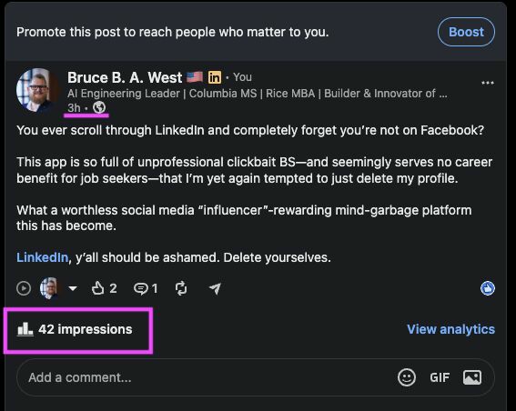
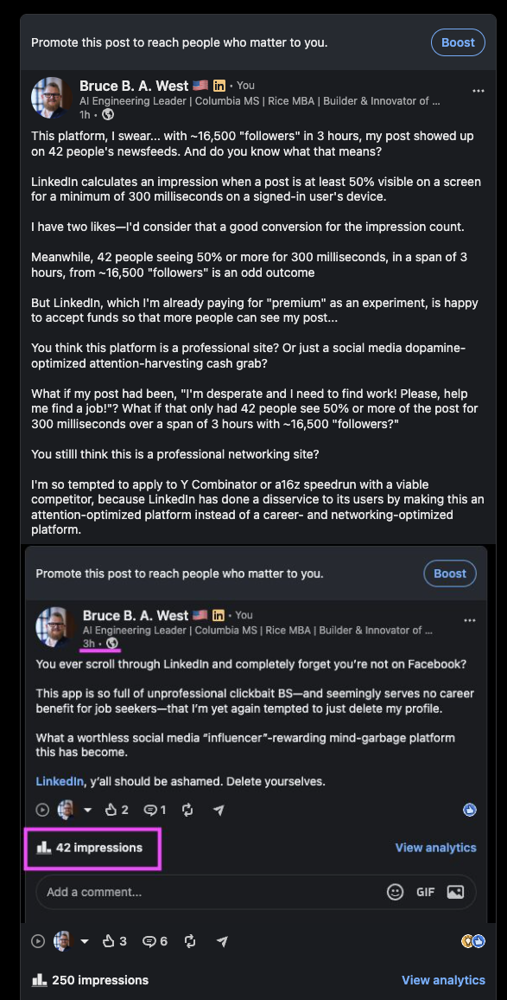
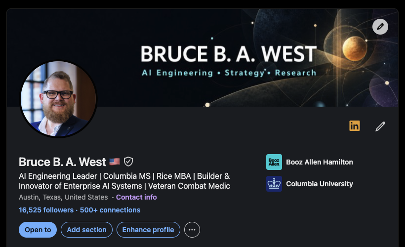

Article reader Listen + reading controls
Article reader
Preparing the reader…
Reading settings
A follower is not an audience¶
Earlier today I posted something deliberately blunt on LinkedIn. I said the feed increasingly felt less like a professional network and more like Facebook: crowded with clickbait, personal-brand theater, and content optimized to provoke a reaction rather than help someone find work, exchange expertise, or make a useful professional connection.
Three hours later, the post showed 42 impressions. My profile has roughly 16,500 followers. Two people had reacted. Above the post, LinkedIn displayed an invitation to Boost it.
I took a screenshot because the juxtaposition was almost too perfect. A platform had offered me a number suggesting extraordinarily weak organic distribution and, in the same interface, offered to sell me more visibility. Then I wrote a second post criticizing that result. That complaint reached about 250 impressions in its first hour—roughly six times the number shown on the original post.
The easiest conclusion is also the most emotionally satisfying: LinkedIn suppressed my post so it could charge me to reach the audience I had already built.
The screenshot does not prove that. It reveals something more defensible, and in some ways more consequential: a follower on a ranked platform is not an addressable audience. It is a relationship that the platform may or may not activate, according to objectives the user cannot see.
That distinction matters on any social network. It matters more on a platform that mediates employment, expertise, reputation, recruiting, sales, and access to professional opportunity.

Figure 1. The original post showed two reactions, one comment, 42 impressions, and an invitation to pay for greater visibility.

Figure 2. The follow-up critique reached 250 impressions while preserving the original post and its 42-impression result in the same screenshot.
Start with what the numbers can and cannot tell us¶
Forty-two divided by 16,500 is approximately 0.25 percent. It is tempting to call that my reach rate. That would be imprecise.
LinkedIn's current analytics documentation for individual members provides separate impression, in-network, out-of-network, and members-reached measures; it also notes that the author's own views and actions are included. LinkedIn's Page analytics documentation distinguishes estimated impressions from distinct members reached and gives the permissive viewability threshold that prompted my reaction: at least half of the content on screen for 300 milliseconds, or a click.
An impression is therefore not a reader. It is not necessarily a unique person. It is not evidence of comprehension, professional relevance, or career benefit. It is an estimated opportunity for exposure.
The denominator is also uncertain. My follower count includes people who may be inactive, rarely open the feed, follow too many accounts to see everything, or simply have no current interest in what I wrote. LinkedIn never promised to deliver each post to every follower. A three-hour snapshot may continue changing. One post cannot reveal the counterfactual—how the same content would have performed under another ranking policy—and it cannot establish intentional suppression.

Figure 3. A profile snapshot taken the same afternoon shows 16,525 followers. The count substantiates the denominator I observed; it does not turn that denominator into a guaranteed or active audience.
The Boost prompt proves only that LinkedIn offers a paid amplification product beside organic post analytics. LinkedIn's own help material says boosting turns a personal post into an advertisement and can carry it beyond the author's network. The screenshot does not show that LinkedIn reduced organic distribution in order to make that sale.
Those qualifications are not concessions to the platform. They are the minimum evidence discipline I would demand when evaluating any consequential artificial intelligence (AI) system. The episode is useful precisely because the honest answer is not available from the metric LinkedIn gave me.
The feed is an allocation system, not a delivery service¶
LinkedIn says its feed-ranking systems consider hundreds of signals, including the content of a post and information drawn from a member's profile, network, and activity. The default feed is personalized. Members can choose a more recent-post view, but LinkedIn still describes Top posts as the default.
In March 2026, LinkedIn described a new generative feed recommender that processes more than a thousand historical interactions to model a member's professional journey. The broader architecture retrieves candidate posts from a person's network and from outside it, then ranks those candidates. LinkedIn's earlier engineering account describes a multi-objective, multi-task ranking framework that predicts several forms of engagement and combines them into a score.
From a publisher's perspective, I have followers. From the system's perspective, my post is one candidate competing with network updates, suggested content, advertisements, career changes, videos, newsletters, games, comments, and everything else that might occupy the next slot.
That is the conceptual error behind most arguments about organic reach. Following feels like subscription. Ranking turns it into eligibility.
There are reasonable reasons to rank. Nobody wants every connection's every update. Chronological feeds can be noisy. Spam, repetition, low-quality automation, and coordinated engagement all need controls. Relevance can make a large network usable.
But ranking is not neutral housekeeping. It is the allocation of a scarce resource: attention. The objective function decides whose knowledge travels, which job seeker remains visible, which professional identity accumulates authority, and which behaviors are rewarded with future distribution.
An impression is a platform metric, not a professional outcome¶
I am not the only person troubled by the gap between the word impression and what it measures. Reuven Cohen wrote that LinkedIn impressions made little sense and sparked a discussion about the 300-millisecond threshold. Paul Trau similarly explained why learning the definition made him less impressed by his impressions. More recently, Will Colthup argued that a thousand impressions may mean a post encountered a thousand scrolling thumbs, not a thousand attentive people.
These posts are anecdotes, not controlled studies. Their value is that they expose a persistent semantic problem. The platform says impression. Users hear someone saw what I wrote. The measurement actually sits much earlier in the causal chain:
rendered on screen → noticed → read → understood → trusted → remembered → acted upon → produced a useful professional outcome
LinkedIn measures the first event and offers some additional engagement and profile-activity statistics. Most of the chain remains invisible.
That makes the ratio of two likes to 42 impressions interesting but not interpretable. The denominator is small, estimated, and potentially non-unique. The two reactions might reflect careful reading; the other 40 displays might have been ignored. Or the post may have been read by people who chose not to react. The metric cannot distinguish those conditions.
This is a familiar failure in analytics: an available proxy gradually takes the place of the thing the system is supposed to accomplish. A professional network should ultimately help produce trusted exchange, useful introductions, informed hiring decisions, learning, collaboration, and mobility. Impressions are merely one technical precondition.
The reach decline is larger than my screenshot¶
Individual creators and marketing analysts have been reporting declining LinkedIn reach for some time. The strongest public evidence I found is directional rather than definitive.
In July 2025, AuthoredUp reported an analysis of three million posts from more than 30,000 personal profiles. It said median reach fell from 1,211 in June 2024 to 636 in May 2025, and that 95 percent of the members in its dataset experienced a decline. Richard van der Blom's 2025 practitioner report, based on 1.8 million posts, claimed organic reach had fallen by nearly half.
Neither source is a peer-reviewed audit of LinkedIn. Both come from businesses that help people perform better on the platform. Their samples may overrepresent active creators, customers, particular geographies, or accounts using connected analytics tools. They cannot tell us whether changes came from ranking, rising content supply, measurement revisions, user behavior, content quality, competition from advertisements, or some combination.
They do, however, show that my experience is not an isolated complaint invented after one disappointing post. Large observational datasets and many creators point toward the same phenomenon: organic visibility has become harder and more variable.
There is a second trend increasing that competition. In 2024, WIRED reported that an AI-detection vendor classified more than half of a sample of 8,795 longer English-language LinkedIn posts as likely AI-generated. Detector results are not ground truth, and LinkedIn said it does not track the number itself. The finding is still consistent with what users can observe: generative tools have lowered the cost of producing professional-sounding content at exactly the moment feed space has become scarcer.
More content enters the system. Ranking becomes more selective. Creators study what the ranking rewards. Content becomes more formulaic. Generative tools make the winning formula cheaper to reproduce. The feed then needs stronger ranking to manage the volume it helped incentivize.
That is a feedback loop, not a morality play about lazy writers.
The professional network has become an attention market¶
Microsoft's 2025 annual report makes LinkedIn's economic structure unusually clear. LinkedIn earns revenue from Talent Solutions, Marketing Solutions, Premium Subscriptions, and Sales Solutions. Microsoft says growth depends in part on increasing member engagement and delivering sponsored content that drives Marketing Solutions. LinkedIn revenue grew by $1.4 billion, or 9 percent, in that fiscal year.
There is nothing inherently improper about this. A platform with global infrastructure, fraud prevention, moderation, search, messaging, and recommendation systems needs revenue. Recruiters, advertisers, sellers, and professionals receive real value from the network.
The tension appears when several roles collapse into one interface.
I am the author supplying content. I am the audience supplying attention and behavioral data. I am a Premium subscriber. I may be a job candidate, buyer, seller, recruiter, or research subject. And when organic distribution disappoints me, I can become the advertiser purchasing access to other users—including, potentially, people who already chose to "follow" me.
The Boost prompt is not proof of manipulation. It is evidence of a conversion funnel built around scarce visibility. LinkedIn explicitly markets member boosting as a way to increase reach quickly. The platform controls the ranking system, defines the metric that reports the result, and sells the mechanism that can improve the reported result.
That concentration of roles creates an information asymmetry. LinkedIn can observe the candidate pool, ranking decisions, experiments, member activity, inventory pressure, paid placement, and estimated outcomes. I can observe "42."
Visibility games change professional behavior¶
Researchers have studied this pattern on other algorithmic platforms. Taina Bucher described the "threat of invisibility": when visibility is governed by an uncertain algorithm, users become conscious of the possibility that they may disappear from the social field. Kelley Cotter later described influencers as playing a "visibility game", piecing together theories about platform rules and adjusting their work accordingly.
LinkedIn has developed its own version of that game. Users learn to write an arresting first line. They break ordinary prose into single-sentence paragraphs. They avoid external links, post at prescribed times, manufacture suspense, solicit comments, cultivate engagement pods, and turn layoffs, grief, hiring, management lessons, or mundane encounters into templated morality tales.
Axios documented the rise of "commenting for reach", including formulaic comments placed under layoff and hiring posts to gain distribution. WIRED described LinkedIn in 2022 as increasingly merging work life with ordinary social-media behavior. By 2025, even LinkedIn's puzzle games were being described as a successful reason to return daily and maintain streaks.
This does not mean personal stories, games, humor, or emotional honesty are unprofessional. Work is part of human life; sterile corporate speech is not a higher form of truth. The problem is the incentive to package every experience for algorithmic performance.
When people cannot see the rules, they imitate whatever appears to win. The visible culture becomes the training data for the next round of creators. A feed may sincerely claim to reward professional relevance while producing a population trained to maximize engagement proxies.
The system's objective is expressed not only in code, but in the behavior it teaches.
Why this matters more than ordinary social-media annoyance¶
LinkedIn is not merely an entertainment feed wearing a tie. It is labor-market and knowledge infrastructure.
A 2022 study published in Science analyzed large randomized experiments on LinkedIn's connection-recommendation system and found that moderately weak social ties causally increased job mobility. The study concerned connection recommendations, not feed impressions, so it does not prove that my post's ranking changed anyone's employment outcome. It establishes the larger point: choices inside a professional network can change the formation of relationships through which jobs travel.
That raises the standard the platform should meet.
For an influencer promoting a consumer product, reduced reach is a marketing inconvenience. For a laid-off worker trying to tell a network that help is needed, visibility can affect who learns about the situation in time to act. For a researcher or engineer sharing hard-won knowledge, ranking determines whether that knowledge reaches the people positioned to reuse it. For an organization recruiting scarce talent, the feed helps decide which candidates and ideas become legible.
The follower graph looks like a map of professional relationships. The recommender system decides which roads are open.
This connects directly to my work on AI and knowledge systems¶
My work and research sit at the intersection of AI engineering, knowledge infrastructure, human–AI collaboration, and accountable decision support. I am interested in a basic question: how do we build computational systems that improve human judgment without hiding the choices that shape the result?
LinkedIn's feed is a useful case because it is an AI-enabled decision system operating in plain sight. Every ranking decision answers a policy question: which information should this person receive now? The answer is produced through data, learned models, business rules, product objectives, experiments, safety controls, and commercial constraints. "The algorithm" is not one mysterious machine. It is an organizational decision embodied in a technical system.
My knowledge-graph research creates a second connection. A graph can say that 16,500 people follow me. That relationship has no operational consequence until retrieval and ranking policies traverse it. Representation is not access. A richly connected graph can coexist with practical invisibility if the system controlling its activation remains opaque.
My research on networked accountability asks us to look beyond a model's output and trace the surrounding system: who selected the objective, what evidence informed the decision, who can inspect it, how affected people can challenge it, and whether feedback changes future operation. Those questions apply to national-security decision support, enterprise AI, hiring systems, and professional feeds in different proportions. The principle is the same.
The National Institute of Standards and Technology AI Risk Management Framework emphasizes context-appropriate measurement, transparent documentation, input from affected people, and mechanisms for feedback and appeal. Applied here, that means asking whether impressions are an appropriate measure for the professional outcome users believe they are pursuing—and whether users have enough information and control to understand a disappointing result.
This is also a lesson for public-sector and defense technology. An alert displayed for 300 milliseconds is not decision advantage. A generated recommendation is not an accepted mission outcome. A system can optimize its measurable proxy, report technical success, and still fail the purpose that justified its deployment. Metric design is mission design.
What a professional network should make visible¶
I do not want LinkedIn to deliver every post to every follower. That would replace one bad system with another. I want the platform to treat professional visibility as a governed outcome rather than a mysterious reward.
A more accountable design would expose the distribution funnel:
- Eligible audience. How many followers could receive the post under its visibility, safety, language, geography, and account settings?
- Active audience. How many of those members used the relevant surface during the measurement window?
- Candidate retrieval. How often did the post enter a feed's candidate set?
- Ranking. How often was it withheld because other content scored higher, and which broad classes of factors mattered?
- Delivery. How many distinct members received a qualifying display, separated from repeat impressions?
- Attention. What aggregate dwell, expansion, save, click, profile visit, or meaningful interaction followed?
- Professional outcome. Which user-selected objective—conversation, introduction, application, recruiter response, lead, learning, or collaboration—did the post support?
The platform need not reveal proprietary model weights or provide a recipe for gaming. It can provide meaningful reason codes, uncertainty, comparisons with the author's own history, and honest limits on what the analytics show.
Users should also have clearer modes. A Following feed should mean what ordinary language implies: updates from chosen people, under user-controlled ordering and frequency. A separate Discover feed can optimize recommendations beyond the network. A Career signal could let a job seeker ask consenting contacts to receive a time-sensitive update without purchasing an advertisement. Paid amplification should remain clearly separated from organic diagnostics, with an explanation of the organic result before the sales prompt.
Most importantly, LinkedIn should measure what makes it professionally distinct. Useful introductions, trusted replies, qualified conversations, job mobility, knowledge reuse, and durable network health matter more than raw display volume or time spent in the feed.
The anger was real; the stronger argument comes after it¶
My original post told LinkedIn, in less measured language, to delete itself. I am not deleting the criticism, but I can improve the diagnosis.
LinkedIn still contains extraordinary professional value. Its own randomized experiments demonstrate that network design can help people move into jobs. I have met collaborators, learned from experts, found opportunities, and maintained relationships there that I would not have preserved elsewhere. That value is exactly why the platform deserves more scrutiny than an ordinary social app.
The central problem is not that my 16,500 followers failed to behave like an email list. They never were one. The problem is that LinkedIn presents the social proof of a large professional audience while reserving the operational meaning of that audience for an opaque recommender—and then offers paid visibility as the most legible way to alter the result.
A follower is not an audience. An impression is not attention. Engagement is not professional value.
Any platform that mediates careers should be able to explain the difference.
Sources and research trail¶
- LinkedIn, "View Post Analytics for Your Content" (accessed August 3, 2026).
- LinkedIn, "Content Analytics for Your LinkedIn Page" (accessed August 3, 2026).
- LinkedIn, "How the Feed Ranks Content" (accessed August 3, 2026).
- LinkedIn Engineering, "Engineering the Next Generation of LinkedIn's Feed" (March 12, 2026).
- LinkedIn Engineering, "Leveraging Dwell Time to Improve Member Experiences on the LinkedIn Feed" (accessed August 3, 2026).
- LinkedIn, "Boost Your Own LinkedIn Post FAQ" and "Get Started with Boosting Posts on LinkedIn" (accessed August 3, 2026).
- Microsoft, 2025 Annual Report (2025).
- Rajkumar et al., "A Causal Test of the Strength of Weak Ties", Science 377, no. 6612 (2022).
- Bucher, "Want to Be on the Top? Algorithmic Power and the Threat of Invisibility on Facebook", New Media & Society 14, no. 7 (2012).
- Cotter, "Playing the Visibility Game: How Digital Influencers and Algorithms Negotiate Influence on Instagram", New Media & Society 21, no. 4 (2019).
- National Institute of Standards and Technology, Artificial Intelligence Risk Management Framework 1.0 (2023).
- AuthoredUp, "Vanishing Audience" (July 9, 2025).
- van der Blom, "Algorithm InSights Report 2025: Chapter 1" (2025).
- WIRED, "I Found the Perfect Replacement for Twitter. It's LinkedIn" (December 15, 2022), "Yes, That Viral LinkedIn Post You Read Was Probably AI-Generated" (November 26, 2024), and "LinkedIn Games Are Still the Best Part of LinkedIn" (April 23, 2025).
- Axios, "Why Your LinkedIn Comment Section Is Getting Crowded" (February 24, 2023).